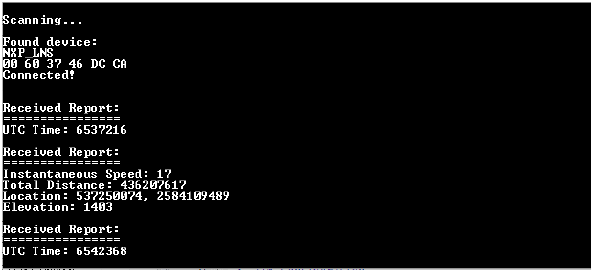

Usage
The two applications are tested together.
Open a serial terminal application on the PC and connect it to the serial port corresponding to the board on which the Client runs.
Press ADVSW on the Server.
Press SCANSW on the Client.
Observe the notifications arriving periodically on the Client.
Figure 1. Notification arriving periodically

Parent topic:
Location and Navigation Server